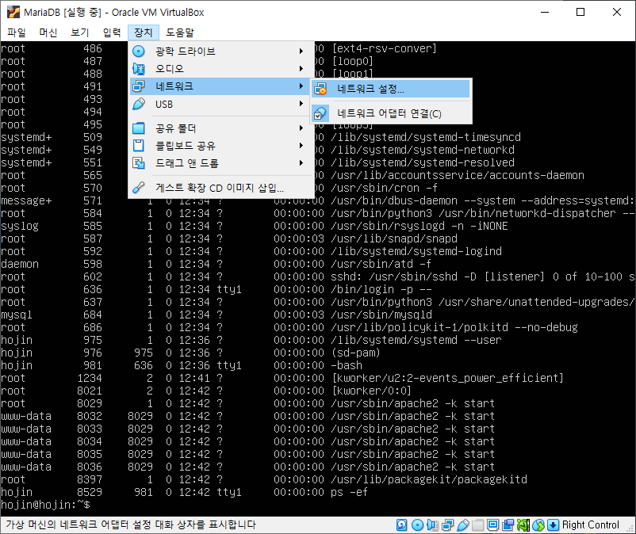
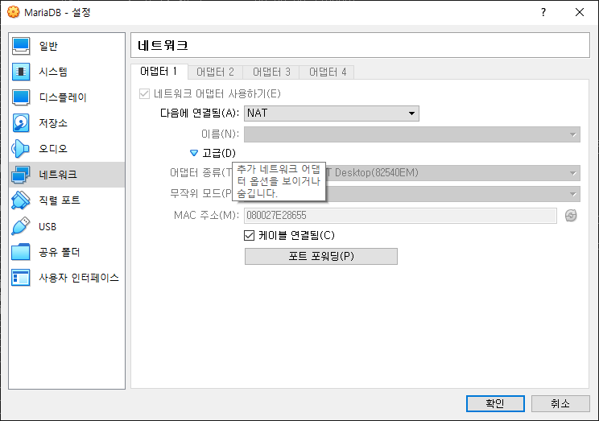
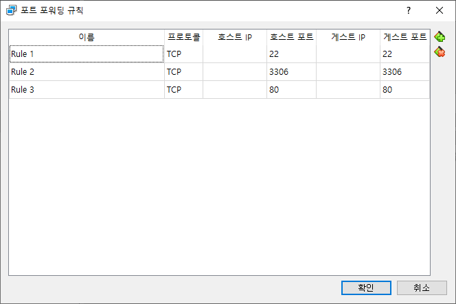
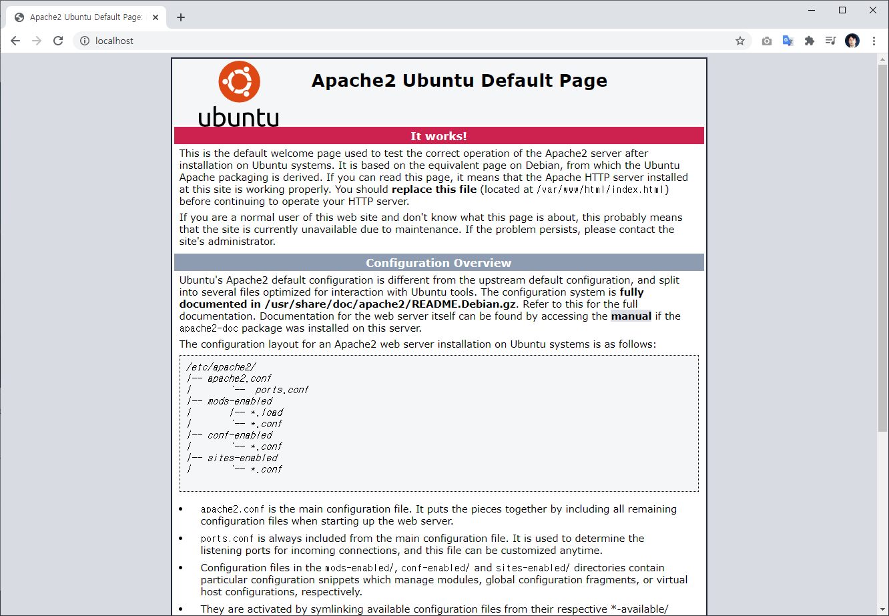

아파치2 설치
아파치 웹서버를 설치합니다.
설치하기
패키지 설치
패키지를 이용하여 apache 2.0을 설치합니다.
$ sudo apt install apache2 -y
패키지가 설치되면 자동적으로 아파치 데몬이 실행됩니다.
status 명령을 통하여 상태를 확인할 수 있습니다.
root@test:~# systemctl status apache2
● apache2.service - The Apache HTTP Server
Loaded: loaded (/lib/systemd/system/apache2.service; enabled; vendor preset: ena>
Active: active (running) since Sun 2021-01-03 03:36:41 UTC; 8s ago
Docs: https://httpd.apache.org/docs/2.4/
Process: 3366 ExecStart=/usr/sbin/apachectl start (code=exited, status=0/SUCCESS)
Main PID: 3381 (apache2)
Tasks: 55 (limit: 2282)
Memory: 4.9M
CGroup: /system.slice/apache2.service
├─3381 /usr/sbin/apache2 -k start
├─3382 /usr/sbin/apache2 -k start
└─3383 /usr/sbin/apache2 -k start
Jan 03 03:36:41 test systemd[1]: Starting The Apache HTTP Server...
Jan 03 03:36:41 test apachectl[3380]: AH00558: apache2: Could not reliably determine >
Jan 03 03:36:41 test systemd[1]: Started The Apache HTTP Server.
만일 서버가 재부팅시 항상 apache2 데몬이 자동실행되기를 원하시면 활성화를 시켜 줍니다.
$ sudo systemctl enable apache2
방화벽 허용
웹서버는 기본적으로 80번 포트를 사용합니다. 80번을 사용하기 위해서는 방화벽을 허용해 주어야 합니다.
test@test:~$ sudo ufw allow 80
[sudo] password for test:
Rules updated
Rules updated (v6)
방화벽을 재실행 합니다.
$ sudo ufw reload
포트포워딩
VirualBox와 같은 가상환경을 사용하는 경우 외부 접속을 위해서 포트 포워드를 같이 해주어야 합니다.

고급을 선택하여 항목을 확장 합니다.

추가를 선택하여 80번 포트를 입력합니다.

브라우저 접속하기
윈도우 또는 작업 PC에서 localhost로 접속을 해봅니다. 아파치 기본 페이지가 출력되는 것을 확인할 수 있습니다.

03.문서경로
아파치는 기본 문서는 /var/www/html 입니다. 해당 경로의 index.html 파일이 실행됩니다.
설치
apt 패키지 메니저를 통하여 apache2 를 설치합니다.
sudo apt -y install apache2
설치 확인
hojin@DESKTOP-11LMH3B:~$ dpkg -l | grep apache
ii apache2 2.4.41-4ubuntu3 amd64 Apache HTTP Server
ii apache2-bin 2.4.41-4ubuntu3 amd64 Apache HTTP Server (modules and other binary files)
ii apache2-data 2.4.41-4ubuntu3 all Apache HTTP Server (common files)
ii apache2-utils 2.4.41-4ubuntu3 amd64 Apache HTTP Server (utility programs for web servers)
hojin@DESKTOP-11LMH3B:~$
서버실행
설치된 아파치2를 실행합니다.
hojin@DESKTOP-11LMH3B:~$ sudo service apache2 start
* Starting Apache httpd web server apache2 [Thu May 21 16:53:45.353412 2020] [core:warn] [pid 13856] (92)Protocol not available: AH00076: Failed to enable APR_TCP_DEFER_ACCEPT
sleep: cannot read realtime clock: Invalid argument
sleep: cannot read realtime clock: Invalid argument
sleep: cannot read realtime clock: Invalid argument
sleep: cannot read realtime clock: Invalid argument
*
브라우저 접속
브라우저에서 localhost를 선택합니다.